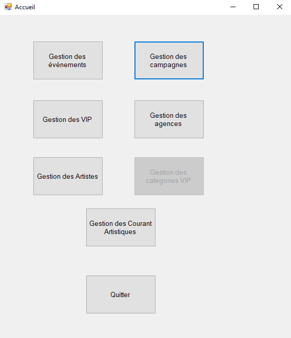
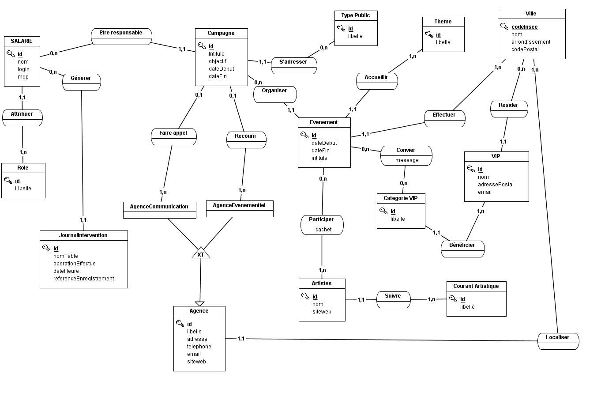

En France, une liberté contrôlée est laissée aux laboratoires qui peuvent communiquer sur certains
de leurs produits tout en respectant des restrictions importantes. C’est pourquoi les laboratoires
pharmaceutiques centrent leur marketing sur la maladie et organisent des campagnes de sensibilisation.
Pour chaque campagne de sensibilisation, GSB organise des événements publics où des artistes réalisent
des œuvres en direct. Actuellement, le service Communication de GSB travaille sur une campagne nationale
de sensibilisation à l'achat de médicaments sur Internet.
Développement d’une application de gestion des campagnes de sensibilisation.
Suivi financier des campagnes à moyen terme.
Application de bureau en architecture en couches.
Authentification et sécurité avec accès restreint.
Spécifications Techniques
L’application respectera l’architecture en couches (GUI, BLL, DAL, BO) et sera développée en C# avec
le Framework .NET. La base de données sera gérée par SQL Server avec des procédures stockées pour les opérations.
Page d'accueil

Page gestion des campagnes
Page affichage campagnes
Page d'ajout campagne
Page modifier/supprimer campagne
BLL CampagneManager
DAL CampagneDAO
GUI FrmAfficherCampagne
MCD de l'application

Compétences :
▸Recenser et identifier les ressources numériques
▸Exploiter des référentiels, normes et standards adoptés par le prestataire informatique
▸Mettre en place et vérifier les niveaux d’habilitation associés à un service
▸Vérifier le respect des règles d’utilisation des ressources numériques
▸Analyser les objectifs et les modalités d’organisation d’un projet
▸Planifier les activités
▸Évaluer les indicateurs de suivi d’un projet et analyser les écarts
▸Réaliser les tests d’intégration et d’acceptation d’un service